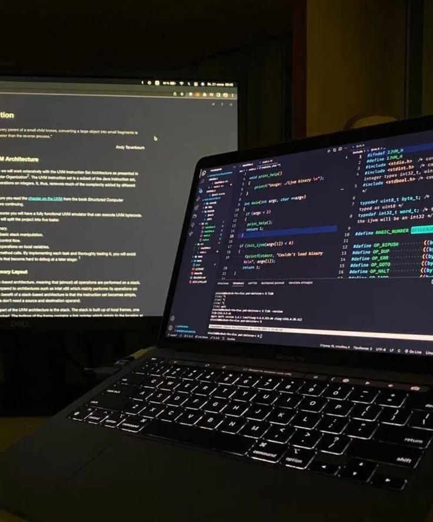
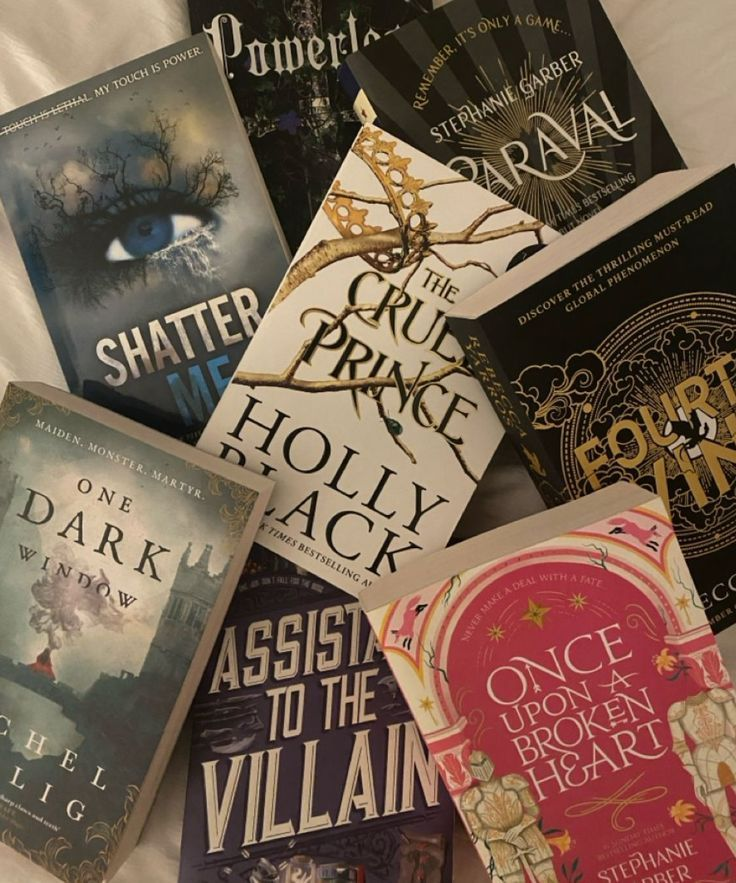
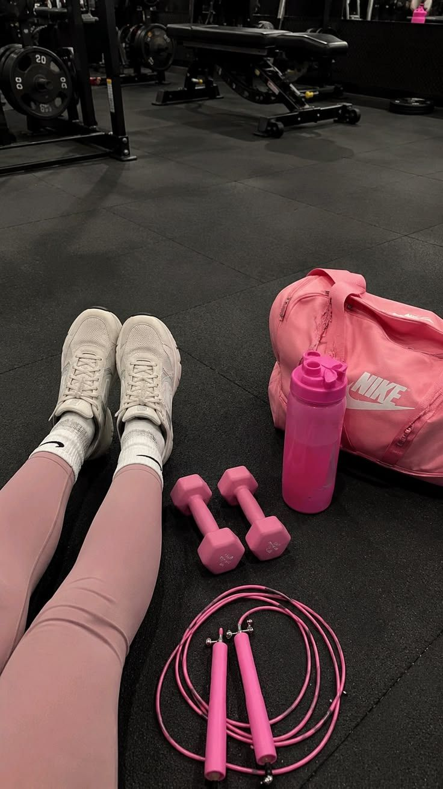
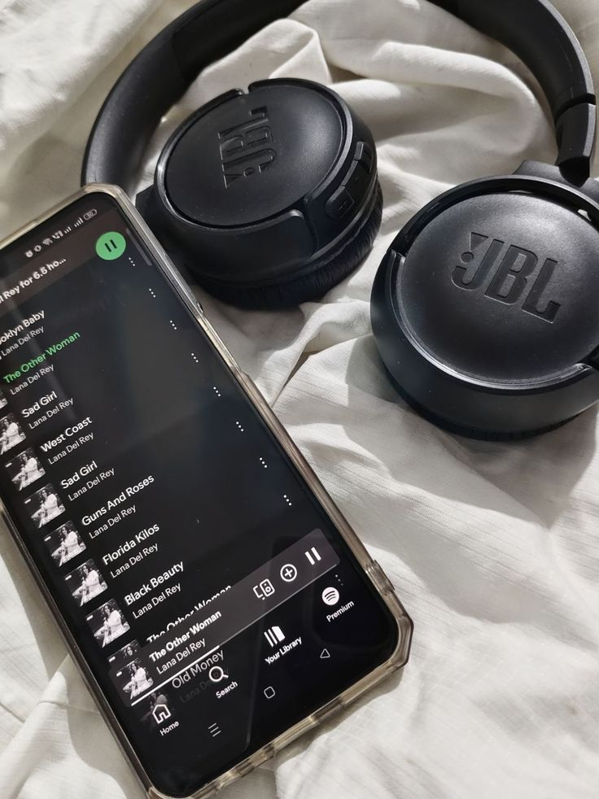
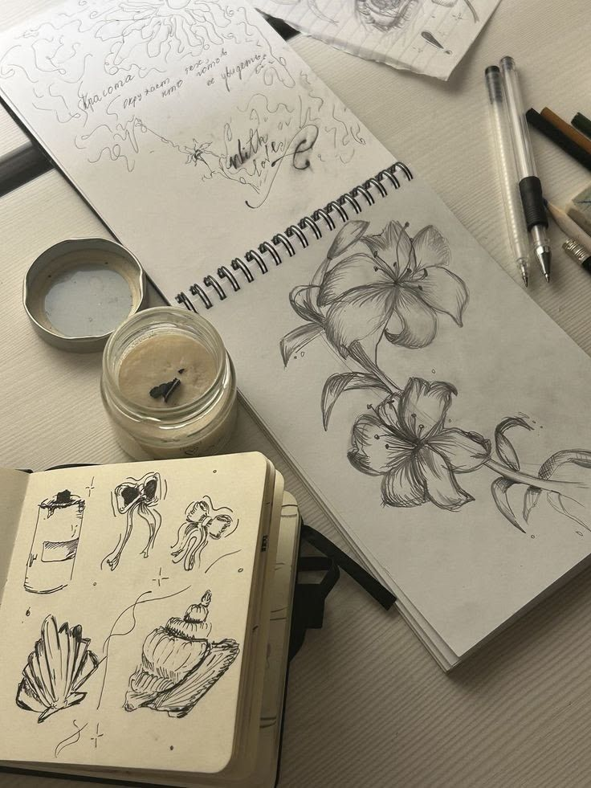

Список увлечений
Вот основные занятия, которым я посвящаю своё свободное время:
-
Веб-разработка
Самое главное увлечение сейчас — изучение HTML, CSS и C++, а также работа с Git.
Я создаю учебные проекты и выполняю лабораторные работы.
- Создание страниц сайта
- Написание программ на C++
- Работа с системой контроля версий
-
Чтение книг
Книги — самое интересное для меня.
В моей личной библиотеке уже 329 книг.
- Техническая литература (по программированию)
- Художественная литература (фэнтези)
- Книги по психологии
-
Спорт
Спорт помогает поддерживать форму и хорошее настроение.

- Тренировки по утрам, по возможности
- Плавание летом
- Частые прогулки на свежем воздухе
-
Музыка
Слушаю различную музыку — она очень расслабляет, особенно во время учёбы.

-
Рисование
Люблю создавать скетчи и пробовать свои силы в разных материалах для рисования.
Это помогает развивать воображение и чувство цвета.
Расшифровка увлечений
- Веб-разработка
- Создание сайтов и веб-приложений с помощью HTML, CSS.
- Чтение
- Способ расширить кругозор и обогатить словарный запас.
- Спорт
- Физическая активность, которая укрепляет здоровье и силу воли.
- Музыка
- Источник вдохновения и способ расслабиться после учёбы.
Почему это важно для меня
Увлечения помогают мне отдыхать от учёбы и развиваться
в разных направлениях.
Особенно ценю веб-разработку, программирование, потому что вижу в ней своё будущее.
Главное — находить баланс между учёбой, хобби и отдыхом.